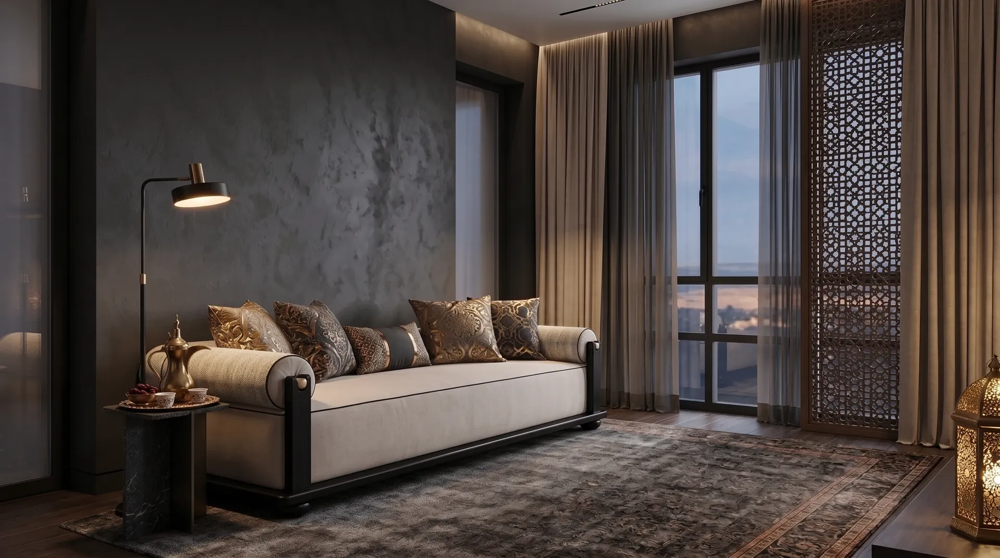
كنب · زوايا · جلسات معيشة
تفصيل الكنب
الكنبة أكثر قطعة تُستخدم في البيت، لذلك نصممها للراحة والاستخدام أولًا، ثم نختار لها ألوان المساحة وخاماتها.

الكنب كما نراها
نصمم الكنب ونفصّله بحسب أبعاد الصالة وعدد الجالسين، ونختار القماش واللون والتشطيب ليتناسق مع الجدران والإضاءة والستائر. ومن ملامح أسلوبنا الأشكال المنحنية في قطع الكنب، والأقمشة البيج والكريمية والرمادية.
من أعمالنا الكنب الشرقي الدافئ، والكلاسيكي المشرق، والجاباندي الهادئ، والمخمل الأحمر بطابع عصري منحنٍ وآخر كلاسيكي منجّد، وجلسات الزوايا بأساليب صناعية وريفية واستوائية ومكتبية.
تشمل الخدمة
- تفصيل الكنب بالمقاس المطلوب
- كنب مودرن بزوايا منحنية، وكنب زاوية وجلسات قابلة للتشكيل
- اختيار القماش واللون: مخمل وكتان وشانيل وغيرها
- كنب عصري وكلاسيكي وجاباندي وشرقي
- تنسيق الوسائد وطاولات الوسط
من أعمالنا في الكنب
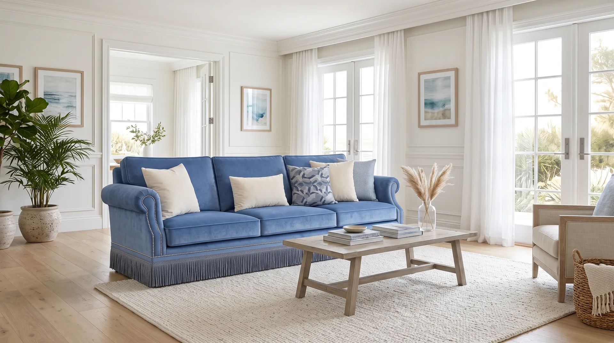
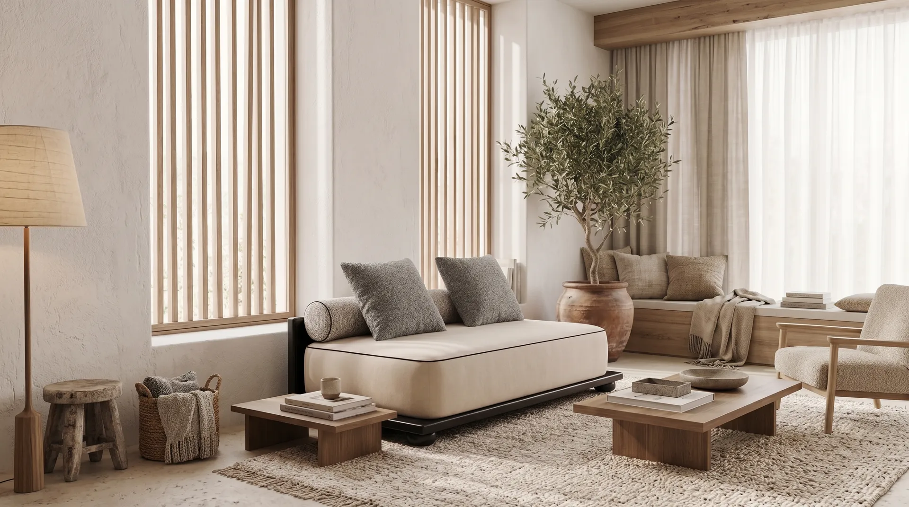
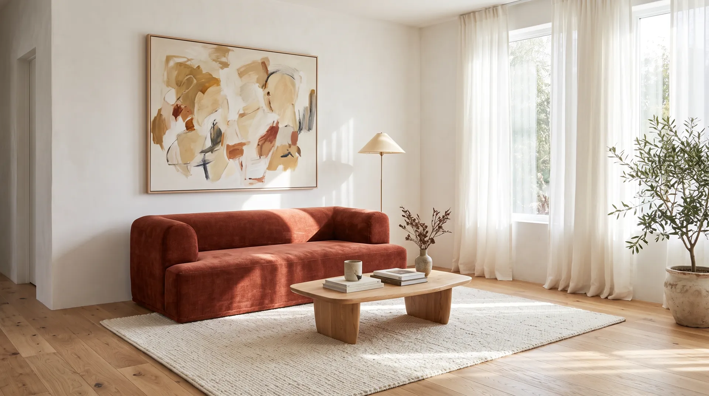
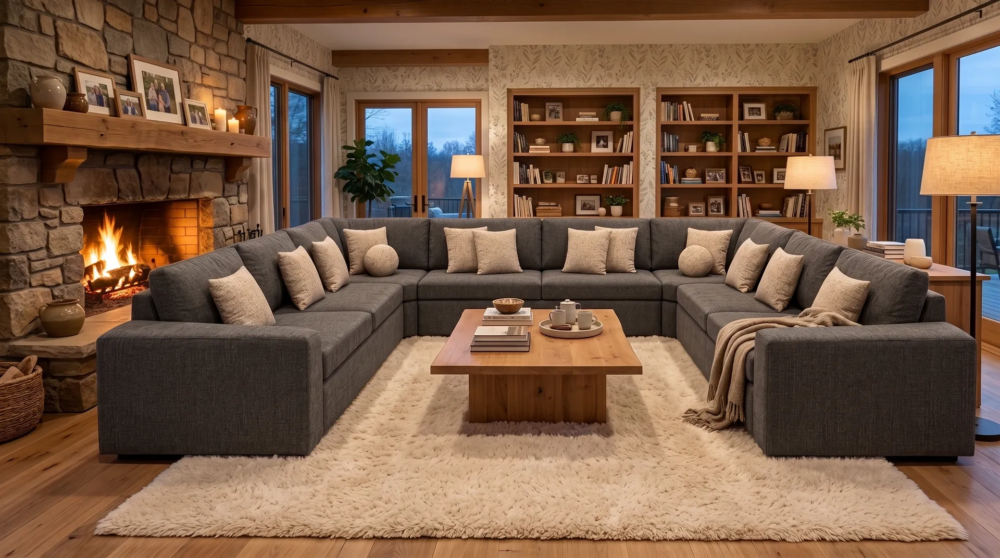
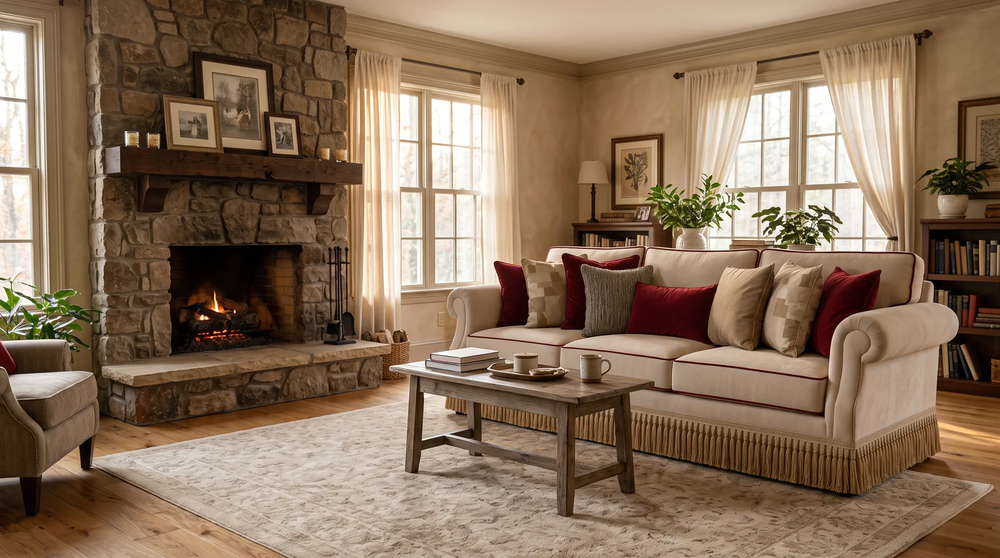
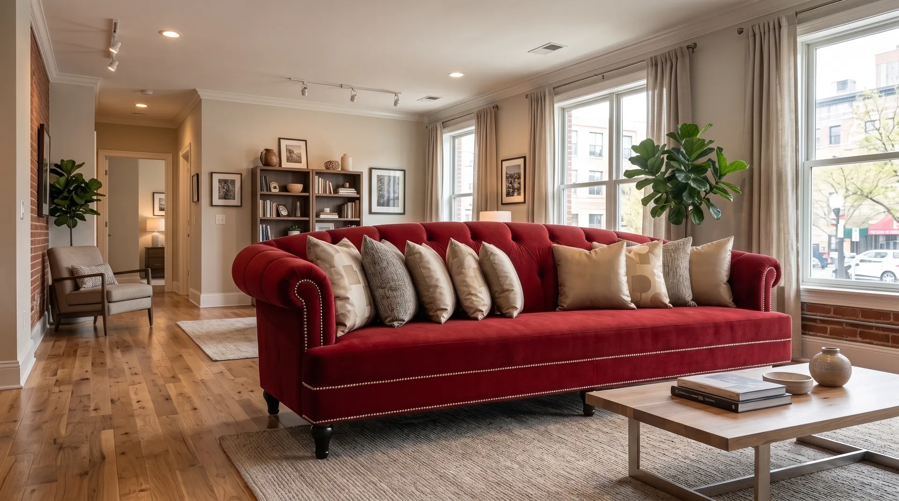
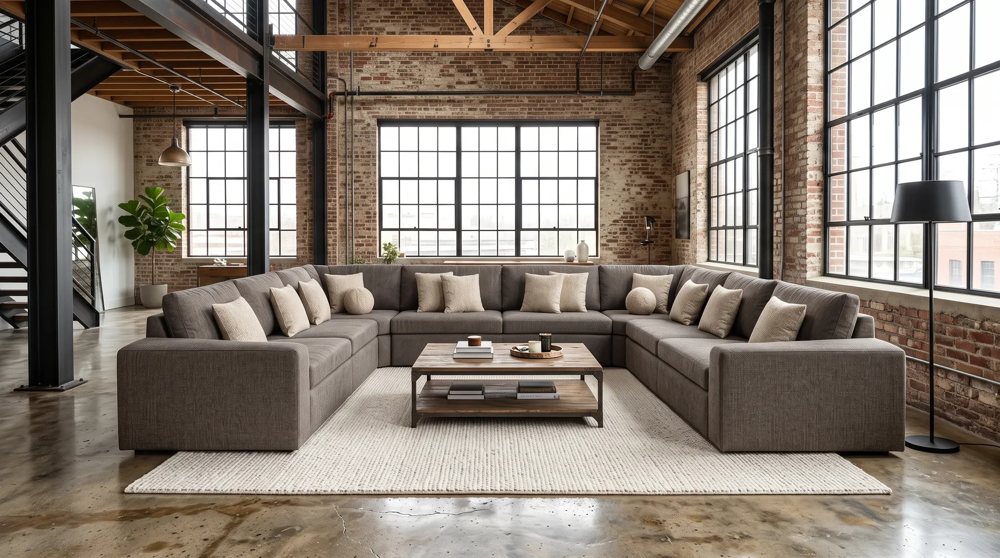
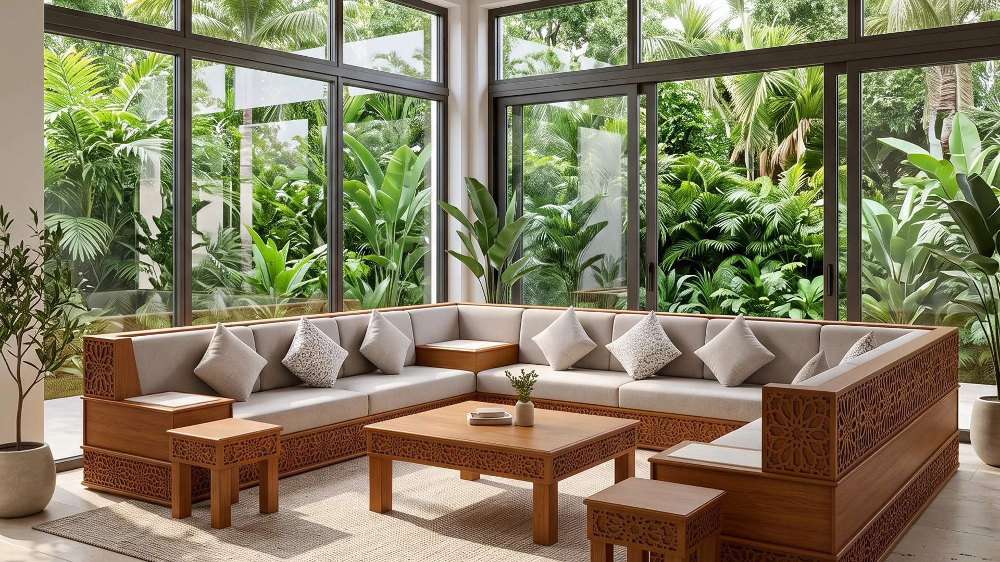
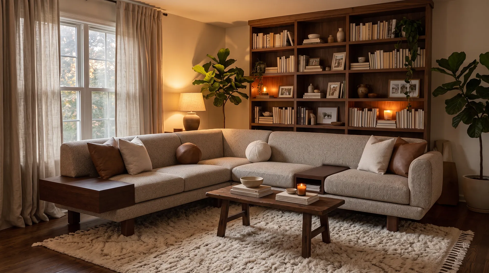
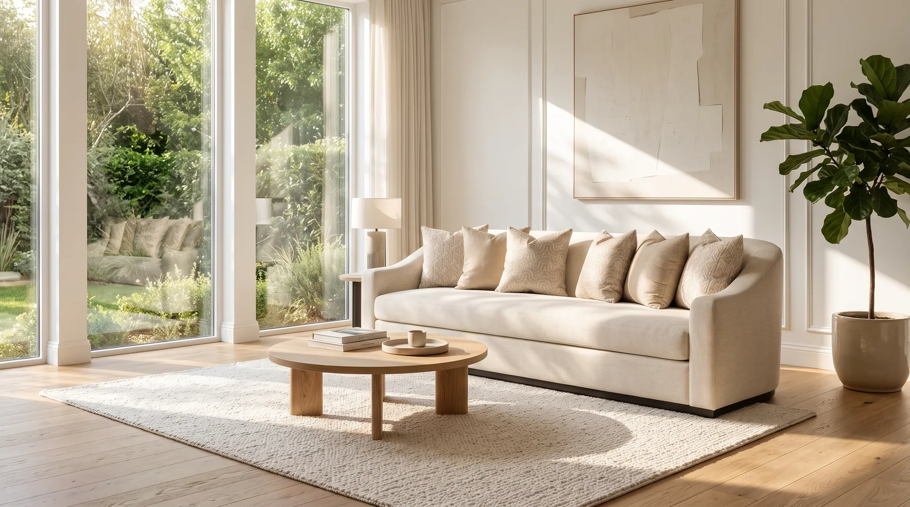

مشاريع ذات صلة
-
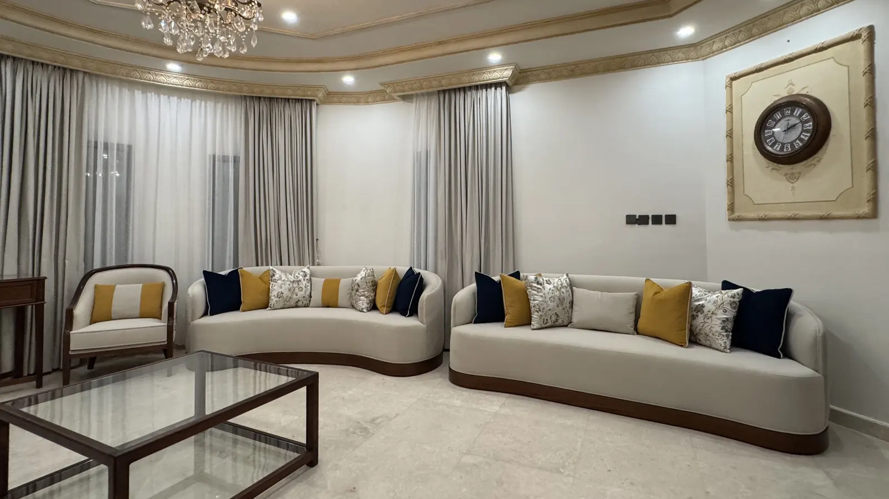
الصالة صالة الزوايا المنحنية The Curved Modern Sofa Room مودرن · زوايا منحنية وخشب زان طبيعي افتح الكتالوج -
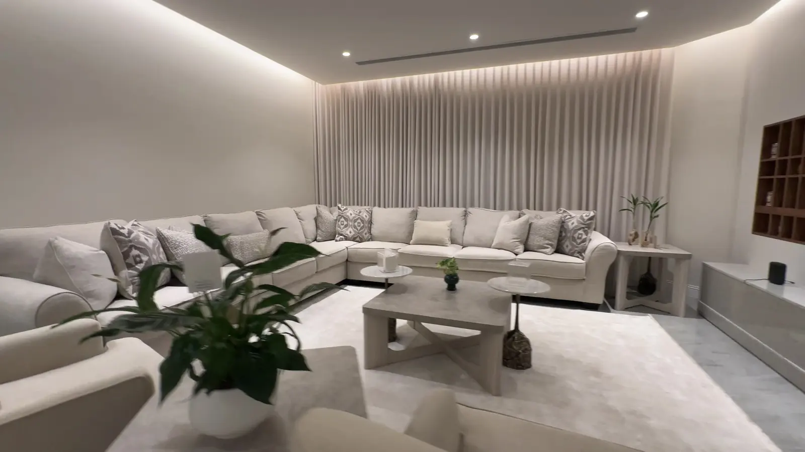
الصالة الصالة البيضاء The White Modern Living Room مودرن · أبيض وشيبورد وإضاءة مخفية افتح الكتالوج -
 الفيلا
فيلا الكنب المنحني
The Curved Sofa & Marble Dining Villa
مودرن ناعم · بوكليه ورخام بيج
افتح الكتالوج
الفيلا
فيلا الكنب المنحني
The Curved Sofa & Marble Dining Villa
مودرن ناعم · بوكليه ورخام بيج
افتح الكتالوج
-
 الصالة
صالة الأوك الرمادي
The Grey Oak Living Room
مودرن · تجاليد وأرفف مضيئة
افتح الكتالوج
الصالة
صالة الأوك الرمادي
The Grey Oak Living Room
مودرن · تجاليد وأرفف مضيئة
افتح الكتالوج
أسئلة عن الكنب
هل يمكن اختيار قماش الكنب ولونه؟
نعم. يمكن تخصيص المقاس واللون والقماش والتشطيب، ونساعدك في اختيار ما يتناسق مع الجدران والإضاءة والستائر.
هل تصممون كنب الزوايا الكبيرة؟
نعم. نصمم جلسات الزوايا على مقاس الصالة، ومن أعمالنا جلسات بأربعة أساليب: صناعي، واستوائي، وريفي دافئ، ومكتبي هادئ.
اطلب عرض سعر لخدمة الكنب
كل زاوية تستحق النظرة الساحرة. تواصل معنا ونبدأ بفهم مساحتك.